Cerveja gelada
O brinde certo para começar bem e deixar a conversa seguir.
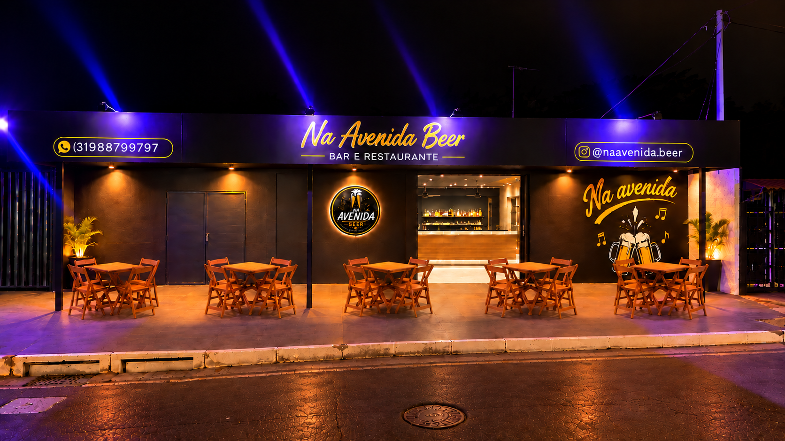
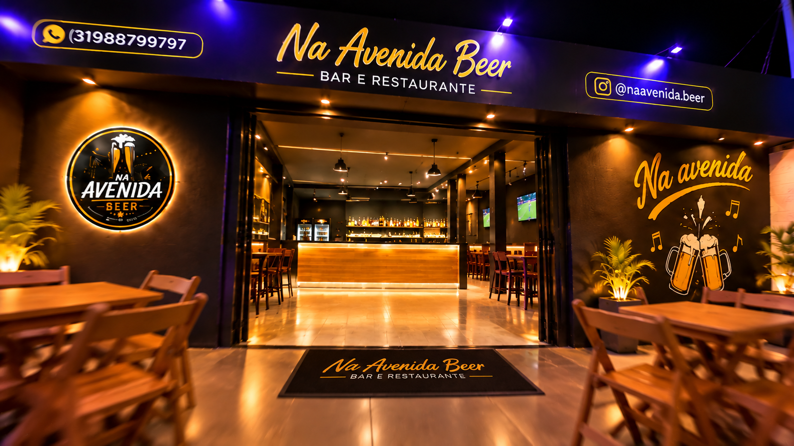
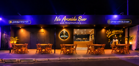
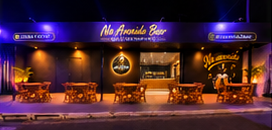
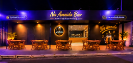
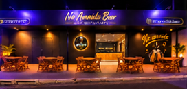
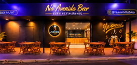
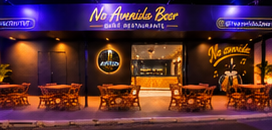
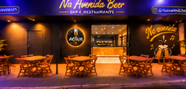
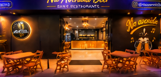
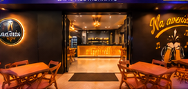
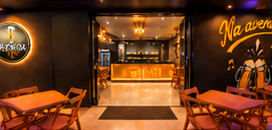
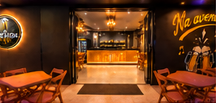
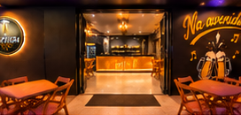
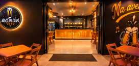
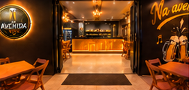
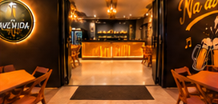
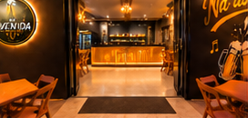
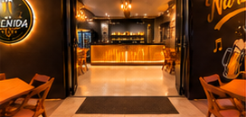
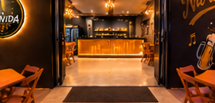
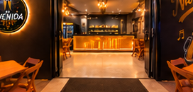
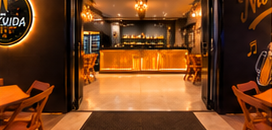
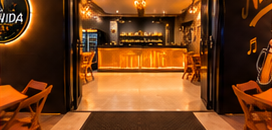
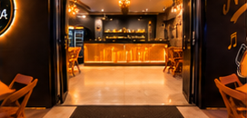
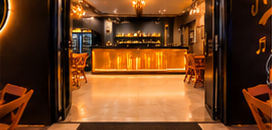
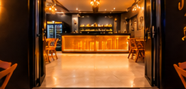
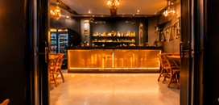
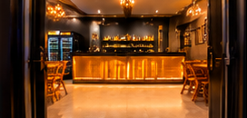
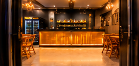
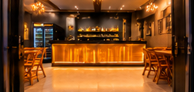
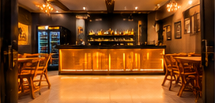
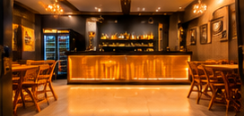
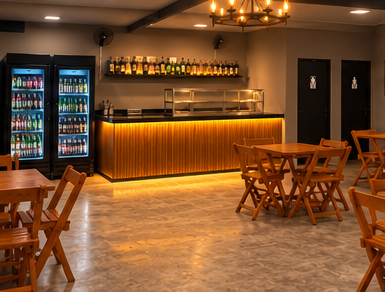
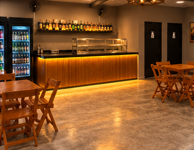
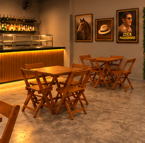
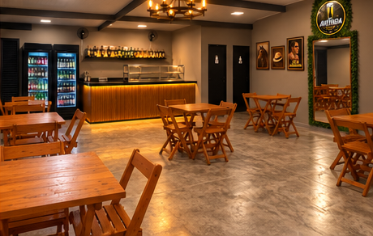
Um espaço para reunir a turma, brindar sem pressa e aproveitar cada momento.
O brinde certo para começar bem e deixar a conversa seguir.
Tem sempre um motivo para juntar os amigos na mesma mesa.
Um lugar para chegar, relaxar e aproveitar sem olhar para o relógio.
Na Avenida Beer. O próximo encontro já tem lugar.